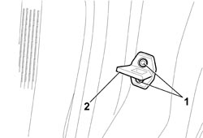
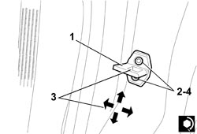

7010B14 REAR SIDE DOOR LOCK STRIKER - R.R
- Path
- Procedures > 70 FITTINGS > 7010 PASSENGER COMPARTMENT REAR SIDE DOORS > 7010B REAR DOOR MECHANICAL LOCKS > 7010B14 REAR SIDE DOOR LOCK STRIKER - R.R
- Kind
- repair procedure (removal / refitting; the operation number is the code)
- Applies to
- all engines; all production periods
- Interactive page
- https://sloeber94.github.io/elrnDB/alfa/159/en/#/939011165
Applies to: all engines; all production periods
 Removing
Removing
 Refitting
Refitting1. Open the door and undo the bolts.
2. Keep the striker.

Applies to: all engines; all production periods
Refitting
Removing- Check that the striker is not damaged.
1. Position the striker.
2. Screw in the bolts without tightening them.
3. Move the striker into the correct position, using the slotted openings for the bolts. The arrows indicate the possible movements for the adjustment.
4. Tighten the retaining bolts to the recommended torque.
Component | Fastening | dia | Value (daNm) | Validity |
|---|---|---|---|---|
REAR DOOR OUTER TRIM | Bolt | M6x12 | 0.7 ÷ 1.1 |

Applies to: all engines; all production periods
- Check that the striker and the door lock are correctly matched and that the alignment is correctly with the door closed.